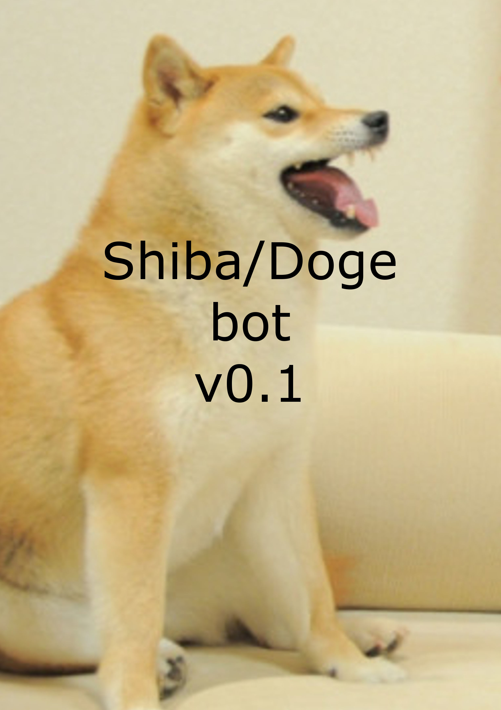
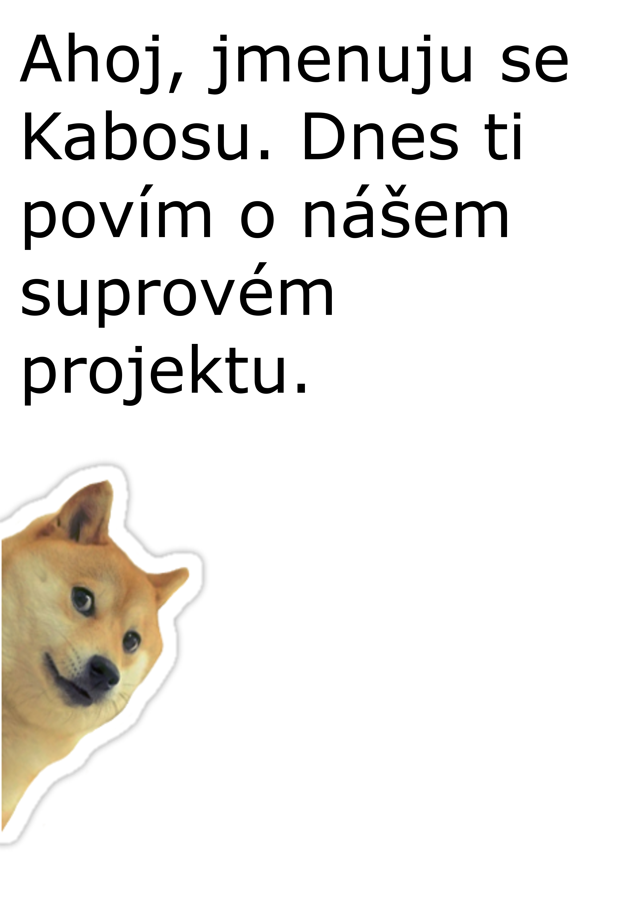

Náš projekt se nazývá Shiba bot, nebo Doge bot. Jedna
se totiž o robota, co má na starostí chat a opatruje svého
majitele před trollerama a spammery. Dnes ale budeme mluvit o
něčem trošku jiném. Přesně o webové stránce projektu.
Když přijdete na stránku tak první co uvidíte je stránka s
novinkami, kde se zapisují novinky kolem
projektu.
Posts stránka z doge.jecool.net
Jak jste si mohli všimnout, články se dají dělit na web, bot nebo oboje. Tyto ikonky ukazují do jaké kategorie daný článek patří. Je to výhodné, protože to poskytuje uživatelovi větší přehled a usnadňuje mu orientaci na webové stránce. Také, když otevřeme sekci Archive, tak se tam zobrazí archiv článku co mají label bot.
Archive stránka z doge.jecool.net
V archivu uživatel bude schopný najít starší zprávy o robotoví, a také popřípadě stáhnout starší verzi robota. Ale vraťme se na Posts sekci a klikněme na “Read more” u nějakého článku. Tam nalezneme celý článek a komentáře k danému článku. Komentář může napsat jak zaregistrováný uživatel, tak i host, který jen přišel podělit se svým názorem.
Detail članku: http://doge.jecool.net/article/?articleId=34
Přidání komentáře (zaregistrováný uživatel)
Přidání komentáře (nezaregistrováný uživatel)
Komentář a jméno musí být alespoň 3 znaky dlouhé. Jinak
vám webová stránka vynadá.
Přidání komentáře (meně jak 3 znáku, nezaregistrovaný uživatel)
To asi vše k článkům. Další sekcí co máme na webové
stránce je sekce About. Tam naleznete základní informace o
projektu a zajímavostí k tomu. Dale máme galerii(Gallery),
kde pokud rozkliknete fotografii tak se vám ta fotografie
zobrazí víc detailu a popisek k
tomu.
Galerie
projektu
Detail fotografie s popiskem
Pak máme Contacts, kde jsou uložené veškeré kontakty na mně. Pokud budeme mít potíže, tak mí napište, rád vám pomohu. A jako poslední sekci nám zůstala Twitch chat log. Ta je dostupná jen pro zaregistrováné uživatele. Pomocí jí jste schopný filtrovat logy z chatu. Velice vhodný nástroj pro moderátory a streamery. Najdete značku lupy. Tu rozklíkněte a zobrazí se vám formulář. V první položce (Name) zadáte jméno uživatele, kterého hledáte. V druhé položce (Date) zadáte datum a čas, kdy uživatel zprávu napsal. Třetí položka (Message) je pro vyhledávání samotného výrazu ve zprávě. Všechny ty tří položky nejsou povinné, proto stačí pokud budete znát jenom jeden z uvedených informací. Je zajímavé, že pokud nezadáte datum, tak se vám data zobrazí od nejnovějšího až po starší. Ale pokud datum a čas zadáte, tak se vám údaje zobrazí od nejbližšího k datu - Od staršího k novějšímu.
Twitch chat log, ukazka autocompleterů